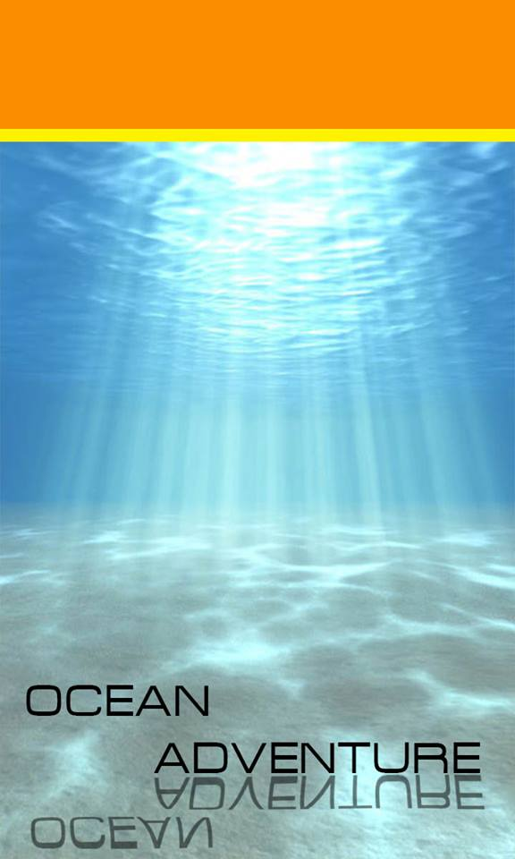

Walk On The Wild Side
The forest is filled with creatures of all shapes, sizes, and colors. If you're ready to meet them, we'll lead the way.
Learn how to make a fire with only bamboo from our Aeta friends. Encounter some amazing creatures like binturong, bat, python, and scops owl. All animals you’ll meet are from the Wildlife in Need Rescue Center.
They were sick, injured, or abandoned and nursed back to health. Their message is to respect and protect their cousins in the wild, and they are the best teachers you could imagine. So, come on, take a Walk on the Wild Side.